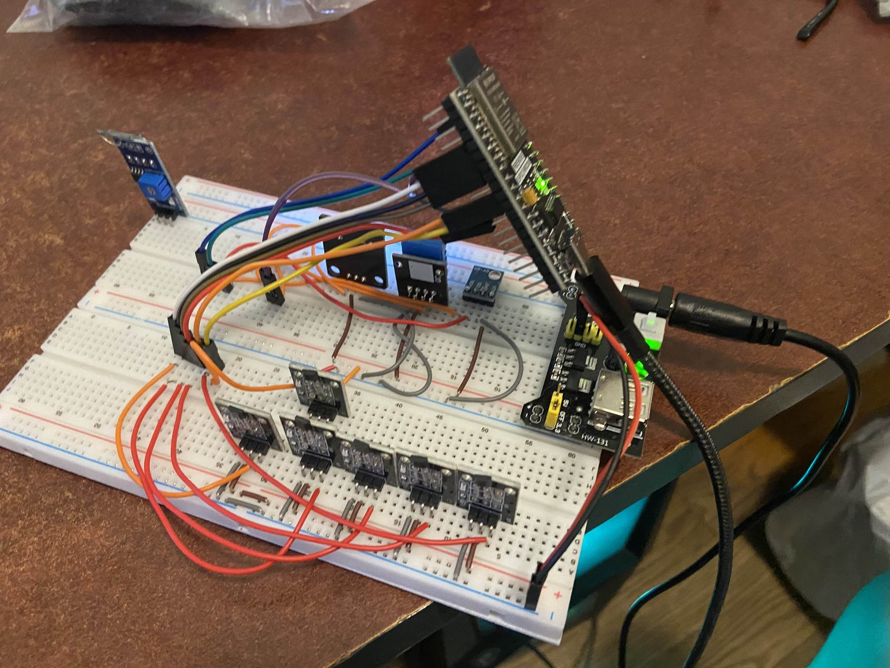

Start with real weather


I wanted a station that measured real weather, not just a temperature sensor on a desk. That meant wind speed and direction, rainfall, and pressure alongside the usual temperature, humidity, and light. Every instrument feeds a single ESP32. The moving ones use hall effect sensors and small magnets so nothing mechanical has to touch a switch.